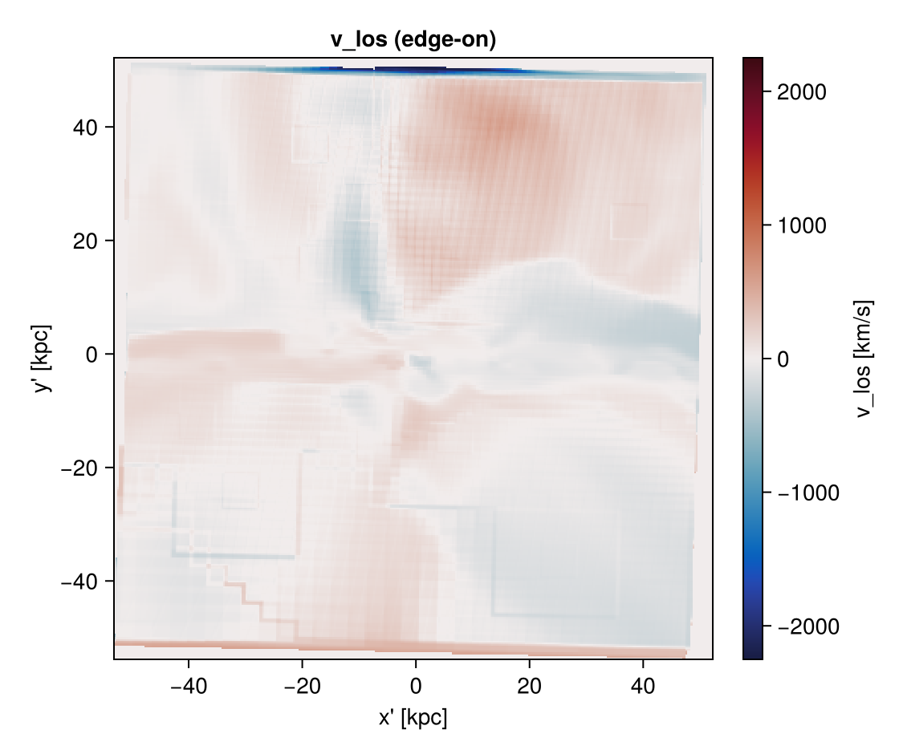
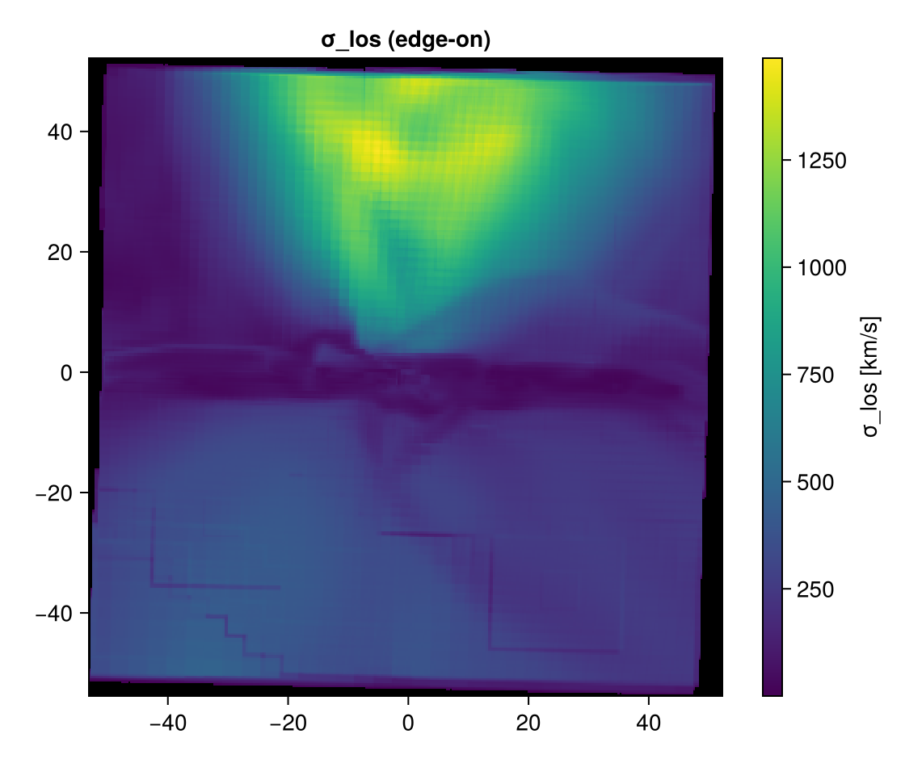
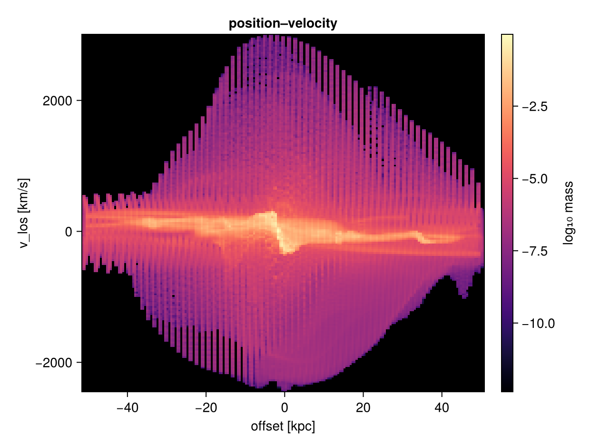
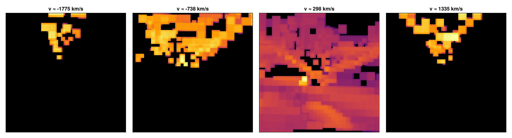
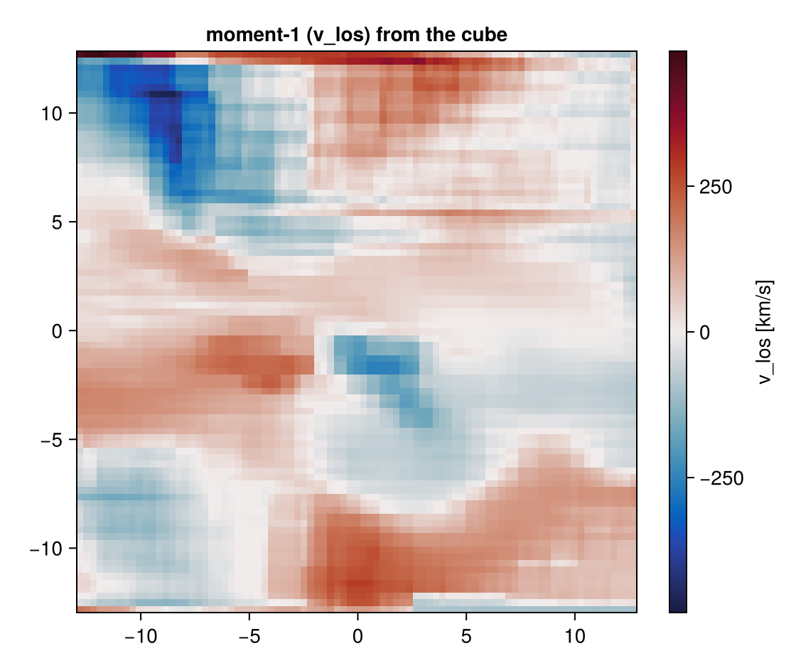
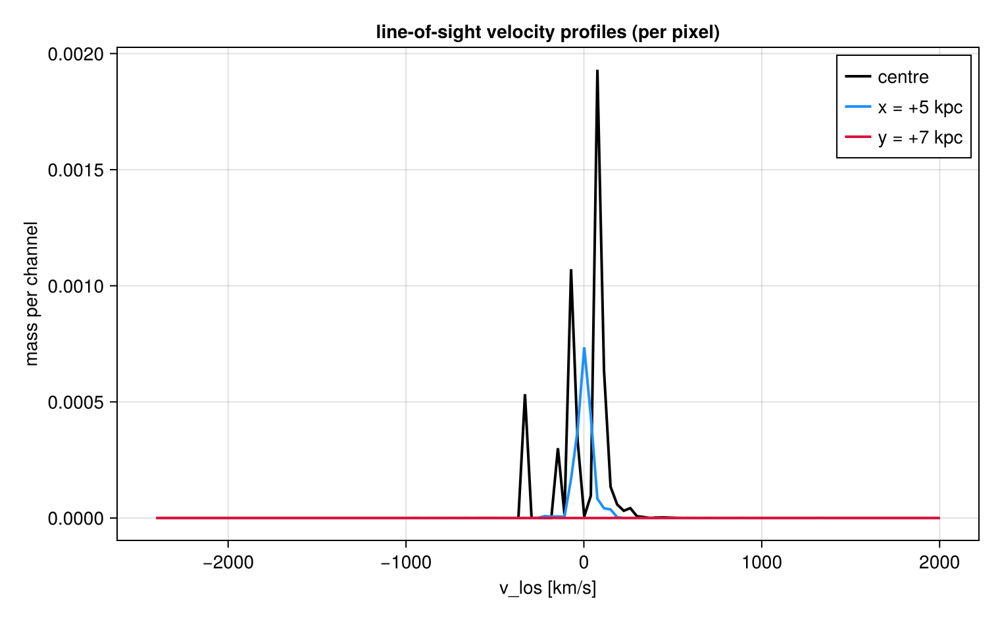
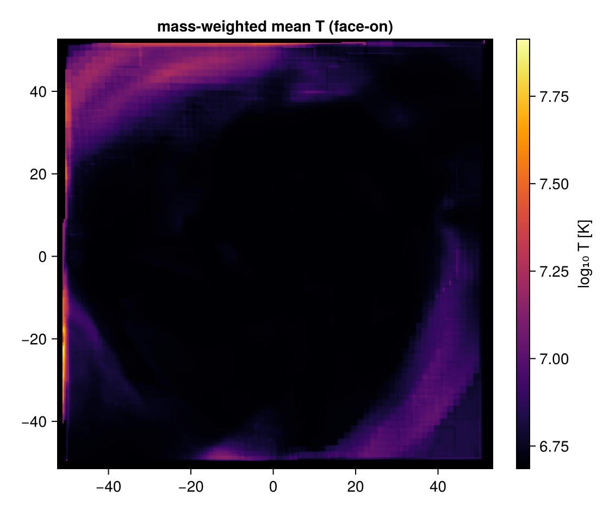
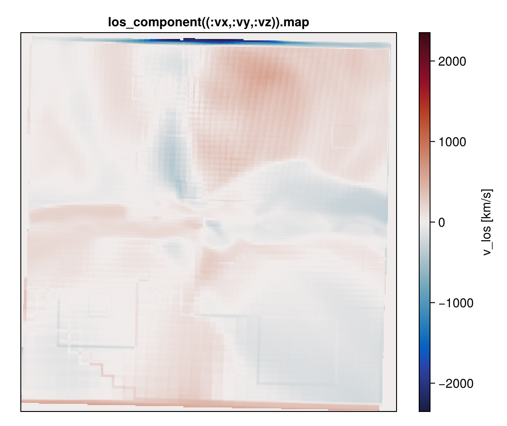
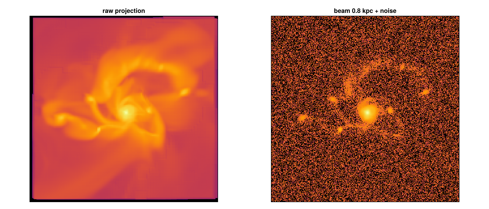

Line-of-sight cubes, kinematics & mock observations
This tutorial is also an executable Jupyter notebook — open / download 12_multi_LosCubes.ipynb. The notebooks run end-to-end and double as part of Mera's test suite.
A projection gives one value per pixel (a sum or weighted average down the sightline). Here we go further: the distribution of a quantity along each sightline (a per-pixel spectrum), line-of-sight velocity fields, position–velocity diagrams, and beam+noise mock images. Follows the Kinematics and mock observations section of the docs.
using Pkg
Pkg.activate(expanduser("~/Documents/codes/github/Mera.jl")) # adjust to your Mera.jl
using Mera, CairoMakie
CairoMakie.activate!()
println("threads = ", Threads.nthreads()) Activating
threads = 4
project at `~/Documents/codes/github/Mera.jl`BASE = "/Volumes/FASTStorage/Simulations/Mera-Tests" # <-- change me
info = getinfo(100, joinpath(BASE, "spiral_clumps"), verbose=false)
gas = gethydro(info, verbose=false, show_progress=false) 0.794820 seconds (3.91 M allocations: 303.291 MiB, 1.40% gc time, 98.84% compilation time)HydroDataType(Table with 590311 rows, 10 columns:
Columns:
# colname type
────────────────────
1 level Int64
2 cx Int64
3 cy Int64
4 cz Int64
5 rho Float64
6 vx Float64
7 vy Float64
8 vz Float64
9 p Float64
10 metallicity Float64, InfoType(100, "/Volumes/FASTStorage/Simulations/Mera-Tests/spiral_clumps", FileNamesType("/Volumes/FASTStorage/Simulations/Mera-Tests/spiral_clumps/output_00100", "/Volumes/FASTStorage/Simulations/Mera-Tests/spiral_clumps/output_00100/info_00100.txt", "/Volumes/FASTStorage/Simulations/Mera-Tests/spiral_clumps/output_00100/amr_00100.", "/Volumes/FASTStorage/Simulations/Mera-Tests/spiral_clumps/output_00100/hydro_00100.", "/Volumes/FASTStorage/Simulations/Mera-Tests/spiral_clumps/output_00100/hydro_file_descriptor.txt", "/Volumes/FASTStorage/Simulations/Mera-Tests/spiral_clumps/output_00100/grav_00100.", "/Volumes/FASTStorage/Simulations/Mera-Tests/spiral_clumps/output_00100/part_00100.", "/Volumes/FASTStorage/Simulations/Mera-Tests/spiral_clumps/output_00100/part_file_descriptor.txt", "/Volumes/FASTStorage/Simulations/Mera-Tests/spiral_clumps/output_00100/rt_00100.", "/Volumes/FASTStorage/Simulations/Mera-Tests/spiral_clumps/output_00100/rt_file_descriptor.txt", "/Volumes/FASTStorage/Simulations/Mera-Tests/spiral_clumps/output_00100/info_rt_00100.txt", "/Volumes/FASTStorage/Simulations/Mera-Tests/spiral_clumps/output_00100/clump_00100.", "/Volumes/FASTStorage/Simulations/Mera-Tests/spiral_clumps/output_00100/timer_00100.txt", "/Volumes/FASTStorage/Simulations/Mera-Tests/spiral_clumps/output_00100/header_00100.txt", "/Volumes/FASTStorage/Simulations/Mera-Tests/spiral_clumps/output_00100/namelist.txt", "/Volumes/FASTStorage/Simulations/Mera-Tests/spiral_clumps/output_00100/compilation.txt", "/Volumes/FASTStorage/Simulations/Mera-Tests/spiral_clumps/output_00100/makefile.txt", "/Volumes/FASTStorage/Simulations/Mera-Tests/spiral_clumps/output_00100/patches.txt"), "RAMSES", Dates.DateTime("2023-05-12T22:47:36.638"), Dates.DateTime("2025-06-21T18:31:55.533"), 4, 3, 3, 7, 100.0, 9.9335244067439, 1.0, 1.0, 1.0, 0.0, 0.0, 0.045, 3.085677581282e21, 6.77025430198932e-23, 1.9890999999999996e42, 6.559266058737735e6, 4.70430312423675e14, 1.6667, true, 6, 8, 0, [:rho, :vx, :vy, :vz, :p, :metallicity], [:epot, :ax, :ay, :az], [:vx, :vy, :vz, :mass, :family, :tag, :birth, :metals], Symbol[], [:index, :lev, :parent, :ncell, :peak_x, :peak_y, :peak_z, Symbol("rho-"), Symbol("rho+"), :rho_av, :mass_cl, :relevance], Symbol[], DescriptorType(1, [:density, :velocity_x, :velocity_y, :velocity_z, :pressure, :metallicity], ["d", "d", "d", "d", "d", "d"], false, true, 1, [:position_x, :position_y, :position_z, :velocity_x, :velocity_y, :velocity_z, :mass, :identity, :levelp, :family, :tag, :birth_time, :metallicity], ["d", "d", "d", "d", "d", "d", "d", "i", "i", "b", "b", "d", "d"], false, true, [:epot, :ax, :ay, :az], false, false, 0, Dict{Any, Any}(), Dict{Any, Any}(), false, false, [:index, :lev, :parent, :ncell, :peak_x, :peak_y, :peak_z, Symbol("rho-"), Symbol("rho+"), :rho_av, :mass_cl, :relevance], false, false, Symbol[], false, false), true, true, true, false, true, false, true, Dict{Any, Any}("&COOLING_PARAMS" => Dict{Any, Any}("cooling" => ".true. ", "metal" => ".true. ", "z_ave" => "1."), "&SF_PARAMS" => Dict{Any, Any}("m_star " => " 1. ! in units mass_sph", "n_star " => " 1 ", "T2_star" => " 1e4 ", "eps_star " => " 0.02 !2%"), "&AMR_PARAMS" => Dict{Any, Any}("levelmax" => "7", "npartmax" => " 500000", "ngridmax" => " 100000 ", "boxlen" => "100. !kpc\t", "levelmin" => "3 ", "nexpand" => "1 "), "&BOUNDARY_PARAMS" => Dict{Any, Any}("jbound_min" => " 0, 0,-1,+1,-1,-1", "kbound_max" => " 0, 0, 0, 0,-1,+1", "no_inflow" => ".true.", "bound_type" => " 2, 2, 2, 2, 2, 2 !2", "nboundary " => " 6", "ibound_max" => "-1,+1,+1,+1,+1,+1", "ibound_min" => "-1,+1,-1,-1,-1,-1", "jbound_max" => " 0, 0,-1,+1,+1,+1", "kbound_min" => " 0, 0, 0, 0,-1,+1"), "&OUTPUT_PARAMS" => Dict{Any, Any}("tend" => "10 !Final time of the simulation", "delta_tout" => "0.1 !Time increment between outputs"), "&POISSON_PARAMS" => Dict{Any, Any}("gravity_type" => "-3 "), "&UNITS_PARAMS" => Dict{Any, Any}("units_density " => " 0.677025430198932E-22 ! 1e9 Msol/kpc^3", "units_time " => " 0.470430312423675E+15 ! G", "units_length " => " 0.308567758128200E+22 ! kpc"), "&RUN_PARAMS" => Dict{Any, Any}("pic" => ".true.", "nsubcycle" => "20*2 ", "clumpfind" => "true", "ncontrol" => "1 !frequency of screen output", "poisson" => ".true.", "verbose" => ".false.", "nremap" => "5 !10", "nrestart" => "99", "hydro" => ".true."), "&CLUMPFIND_PARAMS" => Dict{Any, Any}("ivar_clump" => "1", "density_threshold" => "0.01"), "&FEEDBACK_PARAMS" => Dict{Any, Any}("t_sne" => "10. !10. !Myr", "eta_sn " => "0.2", "!delayed_cooling" => ".true.", "!t_diss " => " 1.\t!Myr", "f_ek" => "0.")…), true, true, Mera.FilesContentType(["#############################################################################", "# If you have problems with this makefile, contact Romain.Teyssier@gmail.com", "#############################################################################", "# Compilation time parameters", "NVECTOR = 64 #32", "NDIM = 3", "NPRE = 8", "NVAR = 6", "NENER = 0", "SOLVER = hydro" … "\t\$(F90) \$(FFLAGS) -c write_patch.f90 -o \$@", "%.o:%.F", "\t\$(F90) \$(FFLAGS) -c \$^ -o \$@ \$(LIBS_OBJ)", "%.o:%.f90", "\t\$(F90) \$(FFLAGS) -c \$^ -o \$@ \$(LIBS_OBJ)", "FORCE:", "#############################################################################", "clean:", "\trm -f *.o *.\$(MOD) *.i", "#############################################################################"], [" --------------------------------------------------------------------", "", " minimum average maximum standard dev std/av % rmn rmx TIMER", " 0.388 0.392 0.397 0.004 0.009 0.7 4 1 refine ", " 0.507 2.917 5.424 1.783 0.611 5.5 1 3 particles ", " 1.347 1.701 2.269 0.344 0.202 3.2 4 1 feedback ", " 16.465 17.380 18.250 0.646 0.037 32.7 3 1 poisson ", " 3.399 4.081 4.713 0.478 0.117 7.7 3 1 rho ", " 0.529 0.541 0.550 0.008 0.014 1.0 1 3 courant ", " 0.079 0.091 0.098 0.007 0.081 0.2 3 2 hydro - set unew ", " 15.304 18.454 22.169 2.656 0.144 34.8 3 4 hydro - godunov ", " 1.796 5.559 8.199 2.596 0.467 10.5 4 3 hydro - rev ghostzones ", " 0.109 0.132 0.142 0.013 0.100 0.2 3 2 hydro - set uold ", " 0.057 0.088 0.122 0.023 0.262 0.2 1 4 hydro upload fine ", " 1.073 1.312 1.474 0.161 0.122 2.5 3 4 cooling ", " 0.112 0.122 0.135 0.009 0.078 0.2 4 3 hydro - ghostzones ", " 0.298 0.301 0.306 0.003 0.011 0.6 4 1 flag ", " 53.074 100.0 TOTAL"], ["/data2/mabe/MeraTest/Ramses/patch_2019_10version/add_list.f90", "!################################################################", "!################################################################", "!################################################################", "!################################################################", "subroutine add_list(ind_part,list2,ok,np)", " use amr_commons", " use pm_commons", " implicit none", " integer::np" … " end do", "", " end do", " ! End loop over grid cells", "end subroutine tsc_cell", "#endif", "!###########################################################", "!###########################################################", "!###########################################################", "!###########################################################"]), true, true, true, 0, ScalesType002(0.0010000000000006482, 1.0000000000006481, 1000.0000000006482, 1.0000000000006482e6, 3261.5637769461323, 2.0626480623310105e23, 3.0856775812820004e16, 3.085677581282e19, 3.085677581282e21, 3.085677581282e22, 3.085677581282e25, 1.0000000000019446e-9, 1.0000000000019444, 1.0000000000019448e9, 1.0000000000019446e18, 3.469585750743794e10, 8.775571306099254e69, 2.9379989454983075e49, 2.9379989454983063e58, 2.9379989454983065e64, 2.937998945498306e67, 2.937998945498306e76, 0.9999999999980551, 0.9999999999980551, 6.77025430198932e-23, 999.9999999987034, 999.9999999987034, 0.20890821919226463, 0.014907037050462488, 14.907037050462488, 1.4907037050462488e7, 4.70430312423675e14, 4.70430312423675e17, 9.999999999999998e8, 9.999999999999998e8, 3.330598439436053e14, 1.0479261167570186e12, 1.9890999999999996e42, 65.59266058737735, 65592.66058737735, 6.559266058737735e6, 30.996344997059538, 8.557898117221824e55, 2.9128322630389308e-9, 517291.4494607442, 517291.4494607442, 680646.644027295, 680646.644027295, 2.9128322630389304e-9, 2.9128322630389304e-9, 2.109755819936081e7, 2.109755819936081e7, 3.1162135509683387e29, 1.2537844818309073e65, 6.198460374231122e71, 6.198460374231122e64, 2.109755819936081e7, 2.1097558199360812e8, 1.380649e-16, 4.0258946849746426e70, 4.0258946849746426e70, 4.0258946849746425e71, 0.00019132101231911184, 191.32101231911184, 191.32101231911184, 1.9132101231911187e-8, 5.341419875695069e67, 5.341419875695069e64, 5.341419875695069e61, 1.819163836006061e41, 4.752256624885217e7, 4.752256624885217e7, 3.4036771916893676e-65, 1.158501842524895e-120, 30.996344997059538, 0.09145663043618026, 6.1918464565599674e-24, 6.1918464565599674e-24, 0.6191846456559967, 619.1846456559967, 619184.6456559967, 1.2584832481461724e23, 1.2584832481461724e23, 1.3943119491905496e-8, 1.3943119491905495e-10, 1.3943119491905496e-13, 3.0984365782372897e-9, 4.302397122930886e13, 4.302397122930886e6, 4302.397122930886, 2.9128322630389304e-9, 8.557898117221824e55, 9.439846472322433e-31, 4.5186572882681335e-30, 3.085677581282e21, 1.9890999999999996e42, 4.70430312423675e14, 1.0, 2.8868464775e-314, 2.8868464933e-314, 2.886846509e-314, 2.8868465645e-314, 2.3498711513e-314, 2.3886328937e-314, 2.3886328937e-314, 2.423425874e-314, 2.423425874e-314, 2.423425874e-314, 2.423425874e-314, 2.423425874e-314, 2.423425874e-314, 4.302397122930886e13, 2.3886328937e-314, 3.085677581282e21, 1.9890999999999996e42, 1.9890999999999996e42, 4.70430312423675e14, 8.557898117221824e55, 8.557898117221824e55, 1.0, 2.3886328937e-314, 2.423425874e-314, 1.3943119491905496e-8, 1.3943119491905496e-8, 1.3943119491905496e-8, 1.3943119491905496e-8, 1.3943119491905496e-8, 3.085677581282e21, 3.085677581282e21, 1.0, 1.0, 1.0, 57.29577951308232), GridInfoType(100000, 272, 3, 3, 3, 7, 6, 25604, [0.0, 1.152424e6, 3.83576e6, 9.850944e6, 1.6777216e7], Bool[0, 0, 0, 0]), PartInfoType(0.0, 0.6708241192497574, 0.0, 0, 39970, 413895, 0, 0, 0, 0, 0, 0, 0, 0, 0, 0, 0), CompilationInfoType("", "", "", "", ""), PhysicalUnitsType002(0.01495978707, 3.08567758128e24, 3.08567758128e21, 3.08567758128e18, 3.08567758128e15, 9.4607304725808e17, 1.9891e33, 1.9891e33, 5.9722e27, 1.89813e30, 6.96e10, 6.96e10, 9.1093837015e-28, 1.67262192369e-24, 1.67492749804e-24, 1.66e-24, 1.6605390666e-24, 6.02214076e23, 2.99792458e10, 6.6743e-8, 1.380649e-16, 1.380649e-16, 6.62607015e-27, 1.0545718176461565e-27, 5.670374419e-5, 6.6524587321e-25, 0.0072973525693, 8.314462618e7, 1.602176634e-12, 1.602176634e-9, 1.602176634e-6, 0.001602176634, 3.828e33, 3.828e33, 1.6605390666e-24, 86400.0, 3600.0, 60.0, 3.15576e16, 3.15576e13, 3.15576e7)), 3, 7, 100.0, [0.0, 1.0, 0.0, 1.0, 0.0, 1.0], [1, 2, 3, 4, 5, 6], Dict{Any, Any}(), 0.0, 0.0, ScalesType002(0.0010000000000006482, 1.0000000000006481, 1000.0000000006482, 1.0000000000006482e6, 3261.5637769461323, 2.0626480623310105e23, 3.0856775812820004e16, 3.085677581282e19, 3.085677581282e21, 3.085677581282e22, 3.085677581282e25, 1.0000000000019446e-9, 1.0000000000019444, 1.0000000000019448e9, 1.0000000000019446e18, 3.469585750743794e10, 8.775571306099254e69, 2.9379989454983075e49, 2.9379989454983063e58, 2.9379989454983065e64, 2.937998945498306e67, 2.937998945498306e76, 0.9999999999980551, 0.9999999999980551, 6.77025430198932e-23, 999.9999999987034, 999.9999999987034, 0.20890821919226463, 0.014907037050462488, 14.907037050462488, 1.4907037050462488e7, 4.70430312423675e14, 4.70430312423675e17, 9.999999999999998e8, 9.999999999999998e8, 3.330598439436053e14, 1.0479261167570186e12, 1.9890999999999996e42, 65.59266058737735, 65592.66058737735, 6.559266058737735e6, 30.996344997059538, 8.557898117221824e55, 2.9128322630389308e-9, 517291.4494607442, 517291.4494607442, 680646.644027295, 680646.644027295, 2.9128322630389304e-9, 2.9128322630389304e-9, 2.109755819936081e7, 2.109755819936081e7, 3.1162135509683387e29, 1.2537844818309073e65, 6.198460374231122e71, 6.198460374231122e64, 2.109755819936081e7, 2.1097558199360812e8, 1.380649e-16, 4.0258946849746426e70, 4.0258946849746426e70, 4.0258946849746425e71, 0.00019132101231911184, 191.32101231911184, 191.32101231911184, 1.9132101231911187e-8, 5.341419875695069e67, 5.341419875695069e64, 5.341419875695069e61, 1.819163836006061e41, 4.752256624885217e7, 4.752256624885217e7, 3.4036771916893676e-65, 1.158501842524895e-120, 30.996344997059538, 0.09145663043618026, 6.1918464565599674e-24, 6.1918464565599674e-24, 0.6191846456559967, 619.1846456559967, 619184.6456559967, 1.2584832481461724e23, 1.2584832481461724e23, 1.3943119491905496e-8, 1.3943119491905495e-10, 1.3943119491905496e-13, 3.0984365782372897e-9, 4.302397122930886e13, 4.302397122930886e6, 4302.397122930886, 2.9128322630389304e-9, 8.557898117221824e55, 9.439846472322433e-31, 4.5186572882681335e-30, 3.085677581282e21, 1.9890999999999996e42, 4.70430312423675e14, 1.0, 2.8868464775e-314, 2.8868464933e-314, 2.886846509e-314, 2.8868465645e-314, 2.3498711513e-314, 2.3886328937e-314, 2.3886328937e-314, 2.423425874e-314, 2.423425874e-314, 2.423425874e-314, 2.423425874e-314, 2.423425874e-314, 2.423425874e-314, 4.302397122930886e13, 2.3886328937e-314, 3.085677581282e21, 1.9890999999999996e42, 1.9890999999999996e42, 4.70430312423675e14, 8.557898117221824e55, 8.557898117221824e55, 1.0, 2.3886328937e-314, 2.423425874e-314, 1.3943119491905496e-8, 1.3943119491905496e-8, 1.3943119491905496e-8, 1.3943119491905496e-8, 1.3943119491905496e-8, 3.085677581282e21, 3.085677581282e21, 1.0, 1.0, 1.0, 57.29577951308232))1. Line-of-sight velocity & dispersion
:vlos = v·ŵ (mass-weighted) and :σlos work at any angle (the axis-tied :σx do not). Edge-on, :vlos shows the rotation (approaching/receding sides).
pv = projection(gas, :vlos, :km_s, direction=:edgeon, center=[:bc], binning=:overlap, range_unit=:kpc, pxsize=[0.3, :kpc])
e = pv.extent .* gas.scale.kpc; vmax = maximum(abs.(extrema(pv.maps[:vlos])))
fig = Figure(size=(560,470))
ax = Axis(fig[1,1], aspect=DataAspect(), title="v_los (edge-on)", xlabel="x' [kpc]", ylabel="y' [kpc]")
hm = heatmap!(ax, range(e[1],e[2],length=size(pv.maps[:vlos],1)), range(e[3],e[4],length=size(pv.maps[:vlos],2)), pv.maps[:vlos], colormap=:balance, colorrange=(-vmax,vmax))
Colorbar(fig[1,2], hm, label="v_los [km/s]"); fig[Mera]: 2026-06-06T10:07:13.593
center: [0.5, 0.5, 0.5] ==> [50.0 [kpc] :: 50.0 [kpc] :: 50.0 [kpc]]
domain:
xmin::xmax: 0.0 :: 1.0 ==> 0.0 [kpc] :: 100.0 [kpc]
ymin::ymax: 0.0 :: 1.0 ==> 0.0 [kpc] :: 100.0 [kpc]
zmin::zmax: 0.0 :: 1.0 ==> 0.0 [kpc] :: 100.0 [kpc]
Selected var(s)=(:vlos, :sd)
Weighting = :mass
Off-axis LOS =
[0.9999, 0.0003, -0.0143] (binning=:overlap)
Effective resolution: 334^2 → map size: 351 x 353
ps = projection(gas, :σlos, :km_s, direction=:edgeon, center=[:bc], binning=:overlap, range_unit=:kpc, pxsize=[0.3, :kpc])
e = ps.extent .* gas.scale.kpc; A = replace(ps.maps[:σlos], 0.0=>NaN)
fig = Figure(size=(560,470)); ax = Axis(fig[1,1], aspect=DataAspect(), title="σ_los (edge-on)")
hm = heatmap!(ax, range(e[1],e[2],length=size(A,1)), range(e[3],e[4],length=size(A,2)), A, colormap=:viridis, nan_color=:black)
Colorbar(fig[1,2], hm, label="σ_los [km/s]"); fig[Mera]: 2026-06-06T10:07:29.084
center: [0.5, 0.5, 0.5] ==> [50.0 [kpc] :: 50.0 [kpc] :: 50.0 [kpc]]
domain:
xmin::xmax: 0.0 :: 1.0 ==> 0.0 [kpc] :: 100.0 [kpc]
ymin::ymax: 0.0 :: 1.0 ==> 0.0 [kpc] :: 100.0 [kpc]
zmin::zmax: 0.0 :: 1.0 ==> 0.0 [kpc] :: 100.0 [kpc]
Selected var(s)=(:σlos, :sd)
Weighting = :mass
Off-axis LOS = [0.9999, 0.0003, -0.0143] (binning=:overlap)
Effective resolution: 334^2 → map size: 351 x 353
2. Position–velocity (PV) diagram
position_velocity bins into (in-plane offset, v_los) — the classic rotation-curve diagnostic.
pvd = position_velocity(gas; direction=:edgeon, center=[:bc], range_unit=:kpc, offset_unit=:kpc, nbins=200, verbose=false)
oc = (pvd.offset[1:end-1].+pvd.offset[2:end])./2; vc = (pvd.velocity[1:end-1].+pvd.velocity[2:end])./2
P = log10.(replace(pvd.pv, 0.0=>NaN))
fig = Figure(size=(620,470)); ax = Axis(fig[1,1], title="position–velocity", xlabel="offset [kpc]", ylabel="v_los [km/s]")
hm = heatmap!(ax, oc, vc, P, colormap=:magma, nan_color=:black); Colorbar(fig[1,2], hm, label="log₁₀ mass"); fig
3. Velocity-channel cube — the per-pixel spectrum
velocity_cube returns a LosCubeType — a position–position–velocity (PPV) cube. cube[i,j,k] is the deposited weight (mass by default) in sky pixel (i,j) and line-of-sight bin k, so cube[i,j,:] is the velocity profile of pixel (i,j) (a mock HI/CO/Hα data-cube). The axes x, y and bins are edges (length = the corresponding cube dimension + 1; x/y in code length units), and the velocity edges are in v_unit. Different channels light up different parts of an edge-on disk — rotation resolved in velocity.
vcu = velocity_cube(gas; direction=:edgeon, center=[:bc], binning=:overlap, xrange=[-12,12], yrange=[-12,12], range_unit=:kpc, pxsize=[0.3, :kpc], nv=120, verbose=false)
vcent = (vcu.velocity[1:end-1].+vcu.velocity[2:end])./2; nx,ny,nv = size(vcu.cube)
sel = round.(Int, range(0.15,0.85,length=4).*nv)
fig = Figure(size=(1400,380))
for (k,ch) in enumerate(sel)
A = log10.(replace(vcu.cube[:,:,ch], 0.0=>NaN))
ax = Axis(fig[1,k], aspect=DataAspect(), title="v ≈ $(round(Int,vcent[ch])) km/s"); hidedecorations!(ax)
heatmap!(ax, A, colormap=:inferno, nan_color=:black)
end
fig
Its moments reproduce the Σ, vlos and σlos maps (computed from the bin centres):
Discretization (Sheppard) caveat. Because the moments use bin centres, the dispersion is biased high by ≈ Δ²/12 (Δ = channel width) — negligible once a line spans several channels, but use more
nv/ a tightervrangefor under-resolved lines. For an unbinned, bias-free per-pixel dispersion uselos_component(gas, (:vx,:vy,:vz); dispersion=true).
Σ, vlos, σlos = velocity_moments(vcu)
println("cube sums to ", round(sum(vcu.cube), sigdigits=5), " (M⊙ code) ; columns ≥ 0: ", all(Σ .>= 0))
e = (vcu.x[1], vcu.x[end], vcu.y[1], vcu.y[end]) .* gas.scale.kpc
fig = Figure(size=(560,470)); ax = Axis(fig[1,1], aspect=DataAspect(), title="moment-1 (v_los) from the cube")
vmax = maximum(abs.(extrema(vlos)))
hm = heatmap!(ax, range(e[1],e[2],length=nx), range(e[3],e[4],length=ny), vlos, colormap=:balance, colorrange=(-vmax,vmax))
Colorbar(fig[1,2], hm, label="v_los [km/s]"); figcube sums to 17.719
(M⊙ code) ; columns ≥ 0: true
4. The per-pixel spectrum — getspectrum
A cube is a spectrum per pixel. getspectrum pulls one out — by sky position (offset from the centre, in range_unit) or by pixel index — ready to plot as a line. Summing a spectrum over its channels gives that pixel's column (its moment-0 value). This is the synthetic emission-line profile along each sightline.
ij = argmax(Σ) # the brightest pixel
fig = Figure(size=(760,470)); ax = Axis(fig[1,1], xlabel="v_los [km/s]", ylabel="mass per channel",
title="line-of-sight velocity profiles (per pixel)")
for (off,lab,col) in ((( 0.0, 0.0),"centre",:black), (( 5.0,0.0),"x = +5 kpc",:dodgerblue), ((0.0, 7.0),"y = +7 kpc",:crimson))
v, I = getspectrum(vcu; x=off[1], y=off[2], range_unit=:kpc)
lines!(ax, v, I, label=lab, color=col, linewidth=2)
end
axislegend(ax, position=:rt); fig
5. The same cube for ANY quantity — los_cube
velocity_cube is los_cube(...; quantity=:vlos). Bin by any scalar field (a per-pixel PDF), or a vector's LOS component. Here: the temperature distribution along each sightline.
tc = los_cube(gas; quantity=:T, q_unit=:K, direction=:faceon, center=[:bc], binning=:overlap, range_unit=:kpc, pxsize=[0.3, :kpc], nbins=60, verbose=false)
Σ, meanT, dispT = los_moments(tc)
e = (tc.x[1], tc.x[end], tc.y[1], tc.y[end]) .* gas.scale.kpc; nx,ny,_ = size(tc.cube)
fig = Figure(size=(560,470)); ax = Axis(fig[1,1], aspect=DataAspect(), title="mass-weighted mean T (face-on)")
A = log10.(replace(meanT, 0.0=>NaN))
hm = heatmap!(ax, range(e[1],e[2],length=nx), range(e[3],e[4],length=ny), A, colormap=:inferno, nan_color=:black)
Colorbar(fig[1,2], hm, label="log₁₀ T [K]"); fig
LOS component of an arbitrary vector as a 2D map — los_component. e.g. velocity, or the gravitational acceleration (:ax,:ay,:az):
vmap = los_component(gas, (:vx,:vy,:vz); direction=:edgeon, center=[:bc], binning=:overlap, range_unit=:kpc, unit=:km_s, pxsize=[0.3, :kpc], verbose=false)
println("v_los map range = [", round(minimum(vmap.map),digits=1), ", ", round(maximum(vmap.map),digits=1), "] km/s")
fig = Figure(size=(560,470)); ax = Axis(fig[1,1], aspect=DataAspect(), title="los_component((:vx,:vy,:vz)).map")
vmax = maximum(abs.(extrema(vmap.map)))
hm = heatmap!(ax, vmap.map, colormap=:balance, colorrange=(-vmax,vmax)); Colorbar(fig[1,2], hm, label="v_los [km/s]"); hidedecorations!(ax); figv_los map range = [-2351.6
, 630.9] km/s
6. Mock observation — beam + noise
mock_observe convolves a map with a Gaussian beam (PSF) and adds noise.
m = projection(gas, :sd, :Msol_pc2, direction=:faceon, center=[:bc], range_unit=:kpc, pxsize=[0.3, :kpc])
raw = m.maps[:sd]
obs = mock_observe(m, :sd; beam_fwhm=0.8, beam_unit=:kpc, noise=maximum(raw)*3e-3)
e = m.extent .* gas.scale.kpc; fig = Figure(size=(1100,470))
for (k,(A,t)) in enumerate(((raw,"raw projection"),(obs,"beam 0.8 kpc + noise")))
ax = Axis(fig[1,k], aspect=DataAspect(), title=t); hidedecorations!(ax)
B = Float64.(A); B[B .<= 0] .= NaN # noise can make pixels ≤ 0; mask before log
heatmap!(ax, range(e[1],e[2],length=size(A,1)), range(e[3],e[4],length=size(A,2)), log10.(B), colormap=:inferno, nan_color=:black)
end
fig[Mera]: 2026-06-06T10:07:36.963
center: [0.5, 0.5, 0.5] ==> [50.0 [kpc] :: 50.0 [kpc] :: 50.0 [kpc]]
domain:
xmin::xmax: 0.0 :: 1.0 ==> 0.0 [kpc] :: 100.0 [kpc]
ymin::ymax: 0.0 :: 1.0 ==> 0.0 [kpc] :: 100.0 [kpc]
zmin::zmax: 0.0 :: 1.0 ==> 0.0 [kpc] :: 100.0 [kpc]
Selected var(s)=(:sd,)
Weighting = :mass
Off-axis LOS = [-0.0144, 0.0222, -0.9997] (binning=:overlap)
Effective resolution: 334^2 → map size: 351 x 347
7. Save & reload a cube (JLD2)
Cubes are a LosCubeType and can be stored and reloaded with all metadata.
tmp = tempname()*".jld2"
savecube(tc, tmp)
tc2 = loadcube(tmp)
println("round-trip identical: ", tc2.cube == tc.cube && tc2.bins == tc.bins && tc2.quantity == tc.quantity)
rm(tmp, force=true)Saved LOS cube (351, 346, 60) → /tmp/jl_tmpcube.jld2
Loaded LOS cube (351, 346, 60) ←
/tmp/jl_tmpcube.jld2
round-trip identical: truePlay around
quantity=:rho,:cs,:machnumber, … for other per-sightline PDFs;quantity=(:ax,:ay,:az)withgravity(combined interface) for LOS acceleration;- change
nv/nbins,vrange/qrange, the beam size and noise; - build moment maps with
los_moments(cube)/velocity_moments(cube).